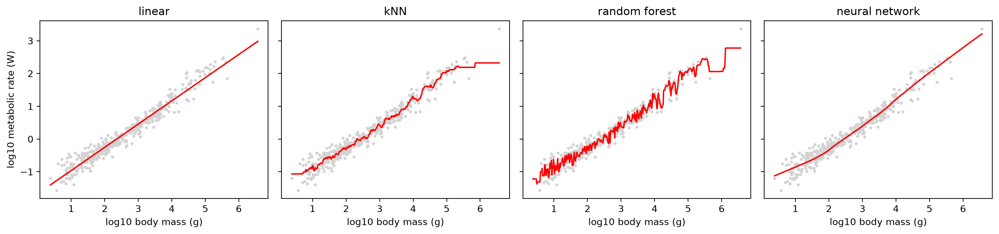

A line, a wobbly average (kNN), a staircase (forest), a smooth bent line (network). The flexible models wiggle around the law without improving on it. Two parameters were enough, and several thousand did not hurt.